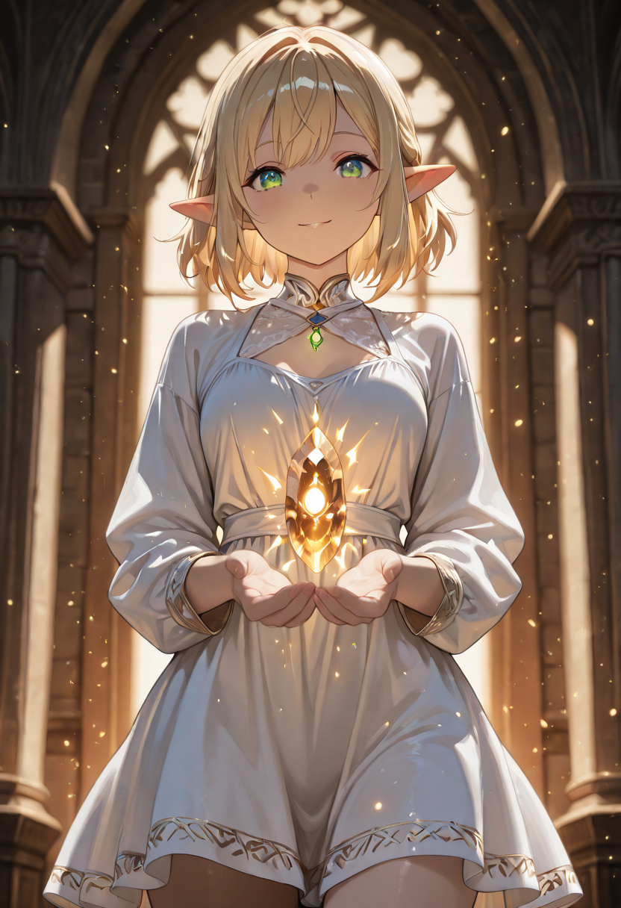
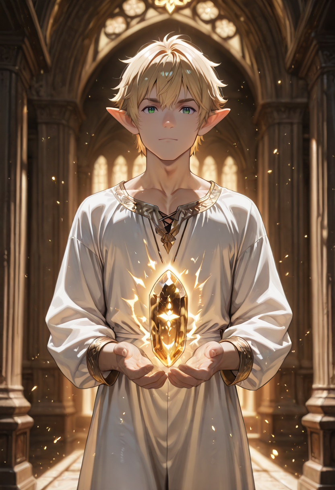
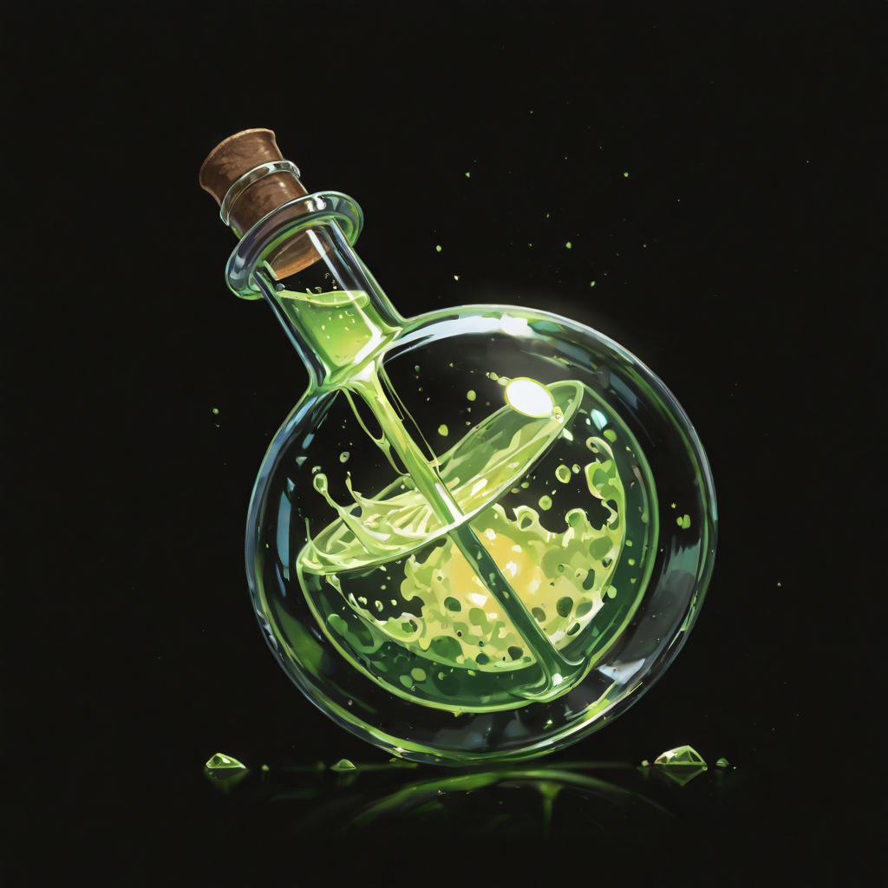
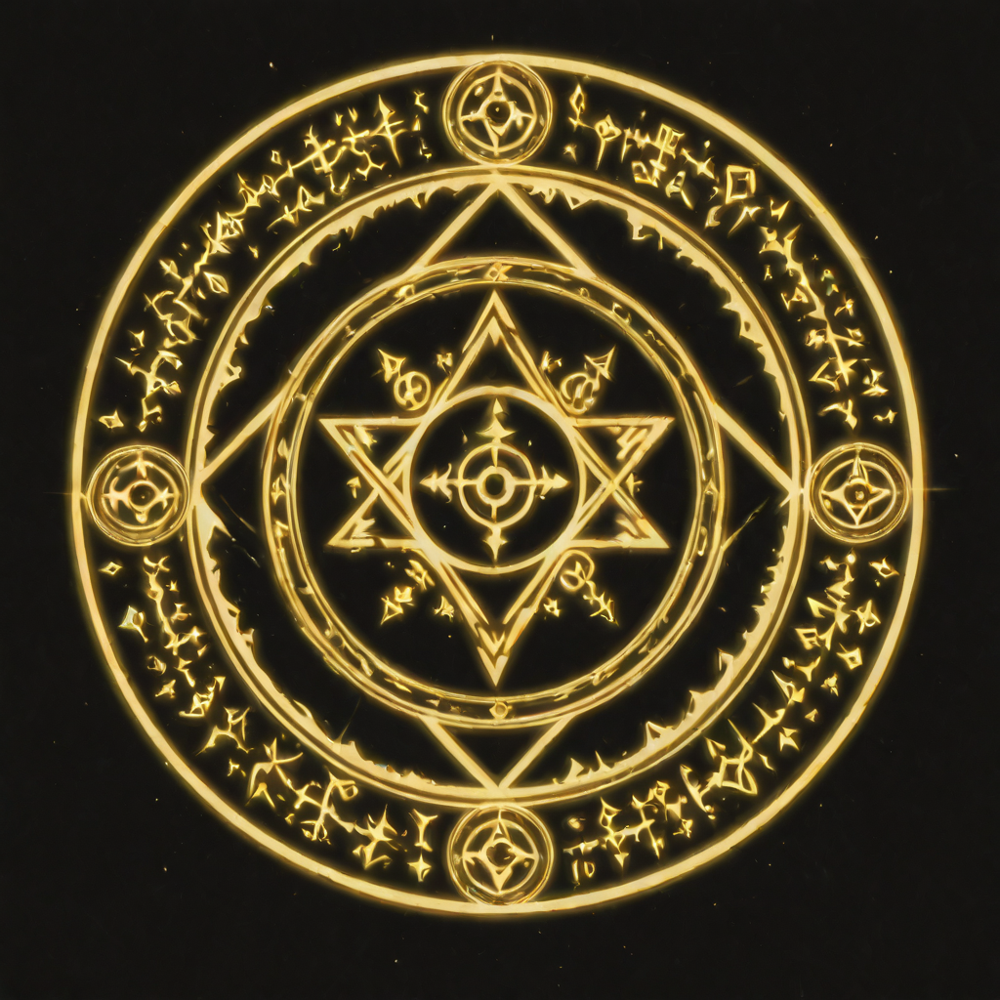
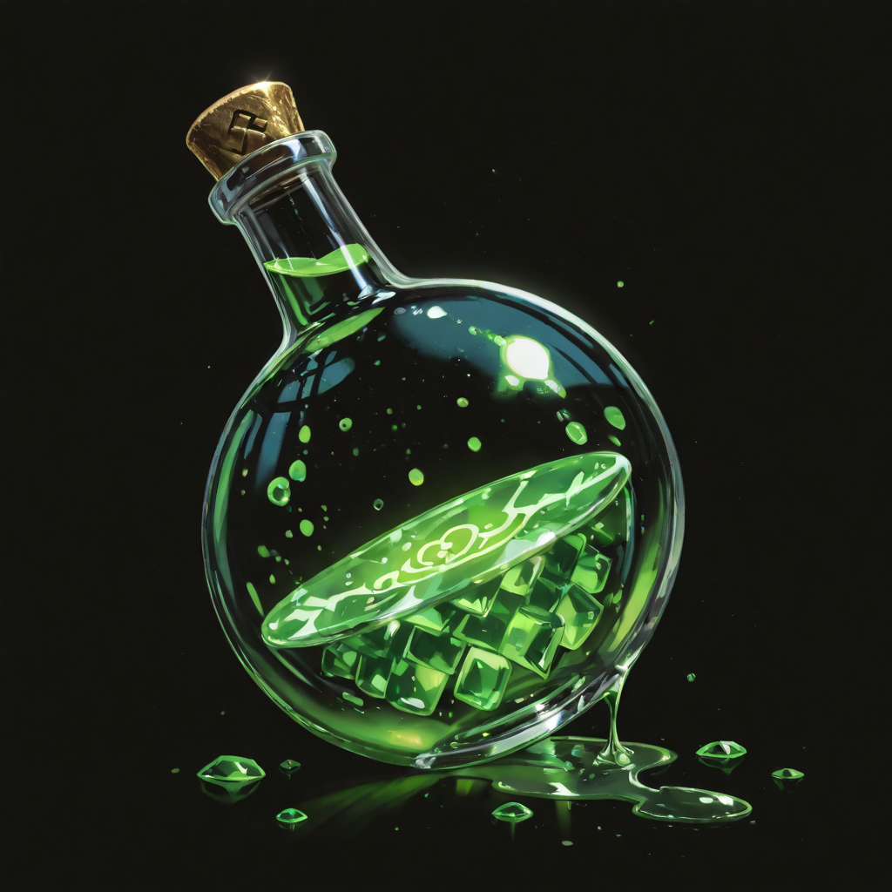

Everything Is a Reagent
The Elf Alchemist was, in her previous life, one of the most advanced natural philosophers in an ancient forest civilization. She mapped the intersection of botanical chemistry and spatial energy across three decades of field research. What Malicott's sap gave her in undeath was not knowledge she didn't have , it was the time to use everything she already knew.
She does not see the battlefield as a place of destruction. She sees it as a reaction chamber. Damage is energy transfer. Wounds are chemical events. The question is not how to prevent the reaction, but how to redirect it , turn potential damage into stored healing potential, use the enemy's aggression as fuel for allied recovery.
Her most distinctive feature is her hands, which seem to be permanently engaged in some invisible manipulation of molecular structure , fingers moving in complex patterns even when she is not actively casting. The Herbalists find her inspirational. The warriors find her slightly unsettling. She does not register either response.
Tactical Data

Life Distillate
Base
Grand Transmutation
Active
Life Stone
PassiveGallery